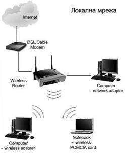

В днешно време достъп до Интернет се осигурява по три основни начина:
Мрежата представлява два или повече компютъра, свързани един с друг с помощта на необходимия за целта хардуер и програмни средства, позволяващи им да обменят информация помежду си и между други устройства.Хардуерната връзка може да бъде изградена с помощта на мревова карта и кабели (коаксиални, усукана двойка, оптични). Същствуват два основни типа локални мрежи, различаващи се по това, какви права имат свързаните в мрежата компютри и по кой начин ги получават. В мрежа с равноправен достъп всеки компютър има равни с другите права, докато в една мрежа тип клиент-сървър тъкмо сървъра определя правата за достъп до другите участници в мрежата при подадена заявка от всеки един компютър-клиент. Между другото, една локална мрежа може да бъде комбинация от двата типа.
(WLAN - wireless LAN) използват радио се канали за предаване на данни. Регламентирани са със стандартите IEEE 802.11b, Bluetooth и HomeRF. Wi-Fi (Wireless Fidelity ) - семейство стандарти за организация на безжични локални мрежи в съответствие с препоръката IEEE 802.11.
Стандартът IEEE 802.11 е приет през 1997 година. За изминалите години, произвежданите в съответствие с този стандарт WLAN, намериха изключително голямо разпространение, така че днес безжичните точки за достъп могат да се открият на много места. За рязкото развитие на тази технология спомогна и корпорацията Intel с мобилната платформа Centrino. Голяма част от съвременните портативни компютри по подразбиране са снабдени с адаптери Wi-Fi. При наличие на публични точки за достъп, всеки разполагащ с такъв компютър може да се свърже с Интернет и да ползва съответните услуги.
Безжичните мрежи, с гъвкавостта си при конфигуриране и разширяване, могат с успех да заменят част от кабелните мрежи при изгражданата мрежова инфраструктура; Потребителите могат свободно да се движат, тъй като се осигурява достъп до мрежовите ресурси от всяко място; Безжичните мрежи не само осигуряват мобилен достъп, но и самите са мобилни – мрежата лесно може да бъде преместена; За разлика от клетъчните технологии, Wi-Fi използват нелицензиран (в повечето страни) и съответно безплатен диапазон от честоти, за който не е необходимо разрешение.